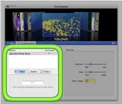

The bottom half of the window displays one of two tabs. Click the Configuration tab to see the commands and settings.
To change the command for an action:
- In the Action list, click the action you want to change.
- Below the Action list, click Key (for a keyboard command), Button (for a mouse-button command), or Shake (for a mouse-jiggle command). Not all types of commands are available for all actions, depending on how the action works.
- For a key command, click in the text field that appears and then press the keys you want to set. We recommend using key combinations that you don't commonly use in other applications.
- For a mouse button command, click the button that appears; the mouse button you click with becomes the command.
- For a mouse shake command, sliders appear for adjusting how much of a shake is needed to activate and how long afterwards to keep the effect going.
To return all the commands to their original state, select Use Default Commands from the gear menu on the right side of the blue bar.